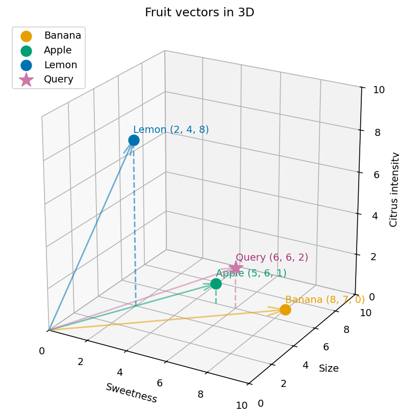

An experiment with text embeddings, cosine similarity, and semantic song search.
Published
October 4, 2026
The problem: searching by meaning
Imagine someone searches our song catalog for “A gentle track about losing a loved one and remembering them.” One description says, “A quiet song about grieving someone who has died and holding on to their memory.” The wording differs, but the theme is close. How can a search engine find it?
A basic keyword search checks whether query words appear in a song’s text. It is easy to understand and useful when words match. Semantic search instead compares representations of the query and songs, so it can retrieve related wording. I will build a small song search engine to test this difference, starting with what an embedding represents.
From text to vectors
An embedding is a vector of numbers produced by a model. For text retrieval, we encode a sentence or document as one vector and compare it with a query vector. The model has been trained so that related texts can have related representations. Similarity is useful evidence, not a guarantee that two texts mean the same thing.
There are two related uses of the word embedding:
Use
What is represented
What happens next
Token embeddings inside a language model
A token ID is mapped to a learned vector
The model processes it with context from other tokens.
Text embeddings for retrieval
A sentence, paragraph, or document is encoded as one vector
A search system compares it with query vectors.
This notebook uses the second kind. Both stored song text and search queries must pass through the same text embedding model.
Our first text embedding
I use the all-MiniLM-L6-v2 sentence embedding model to encode three descriptions. It produces 384 numbers for each one. The next cell compares the first description with itself and the other two using cosine similarity.
from sentence_transformers import SentenceTransformermodel = SentenceTransformer("all-MiniLM-L6-v2")sentences = ["A song about finding hope after heartbreak.","An uplifting track about starting over after a breakup.","An energetic dance song for a summer party.",]embeddings = model.encode(sentences)similarities = model.similarity(embeddings[:1], embeddings)[0]print(f"Dimensions: {embeddings.shape[1]}")for sentence, score inzip(sentences, similarities):print(f"{score:.4f}{sentence}")
Dimensions: 384
1.0000 A song about finding hope after heartbreak.
0.6546 An uplifting track about starting over after a breakup.
0.3642 An energetic dance song for a summer party.
Experiment: do similar meanings produce similar vectors?
The model assigns the breakup descriptions a higher cosine similarity than the summer party description:
Comparison with “finding hope after heartbreak”
Cosine similarity
The same description
1.0000
Starting over after a breakup
0.6546
A summer party
0.3642
The first score is 1 because a vector is compared with itself. The second pair uses different words but shares a theme. This is one small example, not proof that the model will understand every paraphrase or that a particular score always means “relevant.”
Before 384 dimensions, let’s understand three
The fruit example makes vector space easier to see. These coordinates are chosen by hand, not learned by an embedding model. Each vector has three coordinates in the order (sweetness, size, citrus intensity):
Fruit
Vector
Description
Banana
(8, 7, 0)
Very sweet, moderately large, non-citrus
Apple
(5, 6, 1)
Moderately sweet, medium-sized, slightly citrusy
Lemon
(2, 4, 8)
Not very sweet, smaller, strongly citrusy

Three-dimensional plot of banana, apple, lemon, and a query vector, with sweetness on the x-axis, size on the y-axis, and citrus intensity on the z-axis.
The plot places apple and banana relatively close together because both have higher sweetness and size values and low citrus intensity. Lemon lies farther toward the citrus axis. This shows how the chosen features position fruits in a vector space. Cosine similarity compares directions from the origin, rather than straight-line distances on the plot.
Here, the fruit vectors and query use the same three features. Real text embeddings use learned coordinates instead of hand-labeled features.
Cosine similarity from scratch
For two nonzero vectors \(A\) and \(B\), the formula is:
\[
\cos(\theta) = \frac{A \cdot B}{\lVert A \rVert\,\lVert B \rVert}
\]
The dot product multiplies matching coordinates and adds the results. The magnitudes in the denominator normalize vector length, so the score reflects direction. For the query \(Q=(6,6,2)\) and apple \(A=(5,6,1)\):
Magnitudes: \(\lVert Q \rVert=\sqrt{36+36+4}=\sqrt{76}\) and \(\lVert A \rVert=\sqrt{25+36+1}=\sqrt{62}\).
Similarity: \(68/(\sqrt{76}\sqrt{62})\approx0.9906\), displayed as 0.991 to three decimal places.
The next cell uses (6, 6, 2) as a query for a moderately sweet, medium-sized fruit with a little citrus and ranks the stored fruit vectors by cosine similarity.
from math import sqrtfruits = {'Banana': (8, 7, 0),'Apple': (5, 6, 1),'Lemon': (2, 4, 8),}query = (6, 6, 2)def cosine_similarity(a, b): dot_product =sum(x * y for x, y inzip(a, b)) magnitude_a = sqrt(sum(x * x for x in a)) magnitude_b = sqrt(sum(y * y for y in b))return dot_product / (magnitude_a * magnitude_b)ranked =sorted( ((fruit, cosine_similarity(query, vector)) for fruit, vector in fruits.items()), key=lambda result: result[1], reverse=True,)for fruit, score in ranked:print(f'{fruit}: {score:.3f}')
Apple: 0.991
Banana: 0.971
Lemon: 0.651
The query scores about 0.991 with apple, 0.971 with banana, and 0.651 with lemon, so apple ranks first. These scores compare vector directions, not absolute differences in individual fruit features.
These coordinates were chosen by hand to describe fruit. They cannot meaningfully describe Apple Inc., because sweetness, size, and citrus intensity are fruit attributes. Real text embeddings are learned from data and have many more dimensions; individual coordinates usually do not have simple, human-readable meanings.
From three dimensions to 384
The fruit coordinates have labels we chose: sweetness, size, and citrus intensity. The MiniLM vectors have 384 learned coordinates. We should not label an individual coordinate “sadness” or “genre”: useful information is distributed across the vector, and individual numbers are generally hard to interpret on their own.
The comparison principle is the same in both examples: put the query and candidate items in the same space, then compare their vectors. The fruit code uses cosine similarity explicitly. The Chroma collection below uses its configured distance measure, which we have not set to cosine.
A short detour: Word2Vec
Word2Vec is an earlier family of methods for learning word embeddings from context. In continuous bag-of-words (CBOW), surrounding words help predict a target word. In skip-gram, the target word helps predict surrounding words. The idea that context reveals relationships remains useful, but those word-level methods are different from the sentence embedding model used in this experiment.
Building a semantic song search engine
The song dataset has 24 fictional songs. I combine each title and description into one text document. Chroma calls the same MiniLM model to embed those documents and keeps their IDs and other fields as metadata.
songs.csv → title + description → MiniLM embedding → Chroma collection
search text → MiniLM embedding → nearby song vectors → song metadata
The embedding model produces the representation; Chroma stores and searches it. The database’s distance calculation works on vectors and does not independently infer a song’s meaning. This example uses an in-memory Chroma client, so running the next cell rebuilds the collection for the current session. upsert lets the cell run again without duplicating IDs.
import chromadbfrom chromadb.utils import embedding_functionsimport pandas as pdsongs_df = pd.read_csv("songs.csv")rows = songs_df.to_dict("records")client = chromadb.Client()embedding_function = embedding_functions.SentenceTransformerEmbeddingFunction( model_name="all-MiniLM-L6-v2")collection = client.get_or_create_collection("song_search", embedding_function=embedding_function)collection.upsert( ids=[row["id"] for row in rows], documents=[f'{row["title"]}{row["description"]}'for row in rows], metadatas=[ {"songId": row["id"],"title": row["title"],"genre": row["genre"],"description": row["description"], }for row in rows ],)print(f"Indexed {collection.count()} songs")
Indexed 24 songs
Searching songs by meaning
Now I query with wording that does not repeat the target song’s description. Chroma embeds the query with MiniLM and requests the three nearest songs. Results are grouped by input query, so results["metadatas"][0] selects the matches for this one query.
query ="A gentle track about losing a loved one and remembering them."results = collection.query(query_texts=[query], n_results=3)for rank, metadata inenumerate(results["metadatas"][0], start=1):print(f'{rank}. {metadata["title"]} ({metadata["genre"]}) — {metadata["songId"]}')print(f' {metadata["description"]}')
1. Missing Your Voice (Piano ballad) — song_023
A quiet song about grieving someone who has died and holding on to their memory.
2. Last Letter (Folk) — song_008
A bittersweet song about saying goodbye to a former partner and learning to let go.
3. First Light (Pop) — song_001
A song about finding hope after heartbreak.
The saved result ranks these songs for the paraphrased query:
Rank
Song
Genre
Description
1
Missing Your Voice
Piano ballad
A quiet song about grieving someone who has died and holding on to their memory.
2
Last Letter
Folk
A bittersweet song about saying goodbye to a former partner and learning to let go.
3
First Light
Pop
A song about finding hope after heartbreak.
The first song’s description talks about grieving someone and keeping their memory, while the query uses “losing a loved one” and “remembering.” A nearest match is a retrieval result, not an objective judgment of relevance. The model and dataset determine the ranking.
Experiment: keyword search versus semantic search
To make the comparison concrete, I use the same query and the same title plus description text for two approaches. The keyword baseline counts distinct query words appearing in each document after lowercasing and removing a small, explicitly listed set of common words. It is intentionally simple: it does not stem words, expand synonyms, or use a mature text search engine. The semantic ranking comes from the Chroma query above.
I report the top three matches from each approach and check how many selected query words appear in the target song.
import restop_words = {"a", "an", "the", "about", "and", "them", "one", "of", "to","for", "with", "in", "on", "their", "someone",}def content_words(text):returnset(re.findall(r"[a-z]+", text.lower())) - stop_wordsquery_words = content_words(query)keyword_matches = []for row in rows: song_text =f'{row["title"]}{row["description"]}' shared_words = query_words & content_words(song_text)if shared_words: keyword_matches.append((len(shared_words), row["id"], row["title"]))keyword_matches.sort(key=lambda item: (-item[0], item[1]))print(f"Query words checked: {', '.join(sorted(query_words))}")print("Keyword top 3 (ties by song ID):")for count, song_id, title in keyword_matches[:3]:print(f" {song_id}: {title} ({count} matching word)")print("Semantic top 3:")for metadata in results["metadatas"][0]:print(f' {metadata["songId"]}: {metadata["title"]}')target =next(row for row in rows if row["id"] =="song_023")target_text =f'{target["title"]}{target["description"]}'print(f"Target keyword overlap: {len(query_words & content_words(target_text))}")
Query words checked: gentle, losing, loved, remembering, track
Keyword top 3 (ties by song ID):
song_002: Begin Again (1 matching word)
song_005: Evening Drizzle (1 matching word)
song_009: City After Dark (1 matching word)
Semantic top 3:
song_023: Missing Your Voice
song_008: Last Letter
song_001: First Light
Target keyword overlap: 0
The target has zero overlap with the selected query words, so this baseline does not return it. Chroma places it first. This demonstrates the value of embeddings for this paraphrase. It does not establish that semantic search always wins: lexical search can be better for exact titles, IDs, unusual names, or when an embedding model misses the intent. A larger evaluation would need labeled queries and relevance judgments.
Scaling vector search
With 24 songs, comparing the query against every vector is practical. Exact k-nearest-neighbor (k-NN) search computes distances for the stored candidates and returns the true nearest k under the chosen measure. Approximate nearest-neighbor (ANN) indexes can reduce search work in larger collections, sometimes at the cost of missing a true neighbor.
HNSW is one ANN method. It builds a graph of vector relationships and explores promising paths during retrieval. That introduces an engineering trade-off between latency, memory, and recall. Here, recall means the fraction of exact nearest neighbors found by the approximate search; it does not measure whether a song actually fits a listener’s request. We need a larger dataset and representative queries to measure that trade-off. No speed or recall benchmark is claimed for this 24-song example.
What I learned
The fruit vectors made cosine similarity understandable, but their named coordinates are only an illustration. MiniLM’s 384 coordinates are learned and do not have simple labels. The song experiment showed me a more useful distinction: a small keyword baseline missed the grief song because the selected words were absent, while the embedding search ranked it first. It also showed why I must keep the model and the search system separate in my reasoning: MiniLM creates the vectors; Chroma retrieves nearby vectors. The next question is how retrieval quality and latency change when the collection grows.
Where I’m going next
A possible next experiment is to test how retrieval quality and latency change as the song collection grows. That would require a larger dataset, representative queries, and relevance judgments.